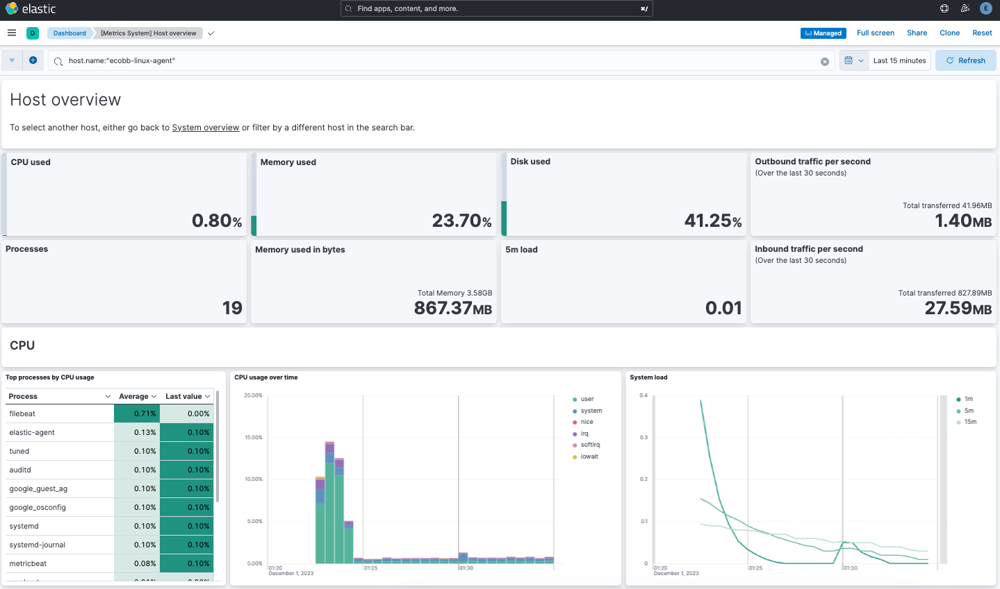

Installing the Elastic Stack
editInstalling the Elastic Stack
editWhen installing the Elastic Stack, you must use the same version across the entire stack. For example, if you are using Elasticsearch 9.0.0-beta1, you install Beats 9.0.0-beta1, APM Server 9.0.0-beta1, Elasticsearch Hadoop 9.0.0-beta1, Kibana 9.0.0-beta1, and Logstash 9.0.0-beta1.
If you’re upgrading an existing installation, see Upgrading the Elastic Stack for information about how to ensure compatibility with 9.0.0-beta1.
For an example of installing and configuring the Elastic Stack, you can try out our Tutorial 1: Installing a self-managed Elastic Stack. After that, you can also learn how to secure your installation for production following the steps in Tutorial 2: Securing a self-managed Elastic Stack.
Network requirements
editTo install the Elastic Stack on-premises, the following ports need to be open for each component.
| Default port | Component |
|---|---|
3002 |
Enterprise Search |
5044 |
Elastic Agent → Logstash |
5601 |
Kibana |
8220 |
Elastic Agent → Fleet Server |
9200-9300 |
Elasticsearch REST API |
9300-9400 |
Elasticsearch node transport and communication |
9600-9700 |
Logstash REST API |
Each Elastic integration has its own ports and dependencies. Verify these ports and dependencies before installation. Refer to Integrations.
For more information on supported network configurations, refer to Elasticsearch Ingest Architectures.
Installation order
editInstall the Elastic Stack products you want to use in the following order:
- Elasticsearch (install instructions)
- Kibana (install)
- Logstash (install)
- Elastic Agent (install instructions) or Beats (install instructions)
- APM (install instructions)
- Elasticsearch Hadoop (install instructions)
Installing in this order ensures that the components each product depends on are in place.
Installing on Elastic Cloud
editOur hosted Elasticsearch Service is available on AWS, GCP, and Azure, and you can try it for free.
Installing on Elastic Cloud is easy: a single click creates an Elasticsearch cluster configured to the size you want, with or without high availability. The subscription features are always installed, so you automatically have the ability to secure and monitor your cluster. Kibana is enabled automatically, and a number of popular plugins are readily available.
Some Elastic Cloud features can be used only with a specific subscription. For more information, see https://www.elastic.co/pricing/.
Tutorial 1: Installing a self-managed Elastic Stack
editThis tutorial demonstrates how to install and configure the Elastic Stack in a self-managed environment. Following these steps, you’ll set up a three node Elasticsearch cluster, with Kibana, Fleet Server, and Elastic Agent, each on separate hosts. The Elastic Agent will be configured with the System integration, enabling it to gather local system logs and metrics and deliver them into the Elasticsearch cluster. Finally, you’ll learn how to view the system data in Kibana.
It should take between one and two hours to complete these steps.
- Prerequisites and assumptions
- Elastic Stack overview
- Step 1: Set up the first Elasticsearch node
- Step 2: Configure the first Elasticsearch node for connectivity
- Step 3: Start Elasticsearch
- Step 4: Set up a second Elasticsearch node
- Step 5: Set up additional Elasticsearch nodes
- Step 6: Install Kibana
- Step 7: Install Fleet Server
- Step 8: Install Elastic Agent
- Step 9: View your system data
- Next steps
If you’re using these steps to configure a production cluster that uses trusted CA-signed certificates for secure communications, after completing Step 6 to install Kibana we recommend jumping directly to Tutorial 2: Securing a self-managed Elastic Stack.
The second tutorial includes steps to configure security across the Elastic Stack, and then to set up Fleet Server and Elastic Agent with SSL certificates enabled.
Prerequisites and assumptions
editTo get started, you’ll need the following:
- A set of virtual or physical hosts on which to install each stack component.
-
On each host, a super user account with
sudoprivileges.
The examples in this guide use RPM packages to install the Elastic Stack components on hosts running Red Hat Enterprise Linux 8. The steps for other install methods and operating systems are similar, and can be found in the documentation linked from each section. The packages that you’ll install are:
For Elastic Agent and Fleet Server (both of which use the elastic-agent-9.0.0-beta1-linux-x86_64.tar.gz package) we recommend using TAR/ZIP packages over RPM/DEB system packages, since only the former support upgrading using Fleet.
Special considerations such as firewalls and proxy servers are not covered here.
For the basic ports and protocols required for the installation to work, refer to the following overview section.
Elastic Stack overview
editBefore starting, take a moment to familiarize yourself with the Elastic Stack components.

To learn more about the Elastic Stack and how each of these components are related, refer to An overview of the Elastic Stack.
Step 1: Set up the first Elasticsearch node
editTo begin, use RPM to install Elasticsearch on the first host. This initial Elasticsearch instance will serve as the master node.
- Log in to the host where you’d like to set up your first Elasticsearch node.
-
Create a working directory for the installation package:
mkdir elastic-install-files
-
Change into the new directory:
cd elastic-install-files
-
Download the Elasticsearch RPM and checksum file from the Elastic Artifact Registry. You can find details about these steps in the section Download and install the RPM manually.
wget https://artifacts.elastic.co/downloads/elasticsearch/elasticsearch-9.0.0-beta1-x86_64.rpm wget https://artifacts.elastic.co/downloads/elasticsearch/elasticsearch-9.0.0-beta1-x86_64.rpm.sha512
-
Confirm the validity of the downloaded package by checking the SHA of the downloaded RPM against the published checksum:
shasum -a 512 -c elasticsearch-9.0.0-beta1-x86_64.rpm.sha512
The command should return:
elasticsearch-{version}-x86_64.rpm: OK. -
Run the Elasticsearch install command:
sudo rpm --install elasticsearch-9.0.0-beta1-x86_64.rpm
The Elasticsearch install process enables certain security features by default, including the following:
-
Authentication and authorization are enabled, including a built-in
elasticsuperuser account. - Certificates and keys for TLS are generated for the transport and HTTP layer, and TLS is enabled and configured with these keys and certificates.
-
Authentication and authorization are enabled, including a built-in
-
Copy the terminal output from the install command to a local file. In particular, you’ll need the password for the built-in
elasticsuperuser account. The output also contains the commands to enable Elasticsearch to run as a service, which you’ll use in the next step. -
Run the following two commands to enable Elasticsearch to run as a service using
systemd. This enables Elasticsearch to start automatically when the host system reboots. You can find details about this and the following steps in Running Elasticsearch withsystemd.sudo systemctl daemon-reload sudo systemctl enable elasticsearch.service
Step 2: Configure the first Elasticsearch node for connectivity
editBefore moving ahead to configure additional Elasticsearch nodes, you’ll need to update the Elasticsearch configuration on this first node so that other hosts are able to connect to it. This is done by updating the settings in the elasticsearch.yml file. For details about all available settings refer to Configuring Elasticsearch.
-
In a terminal, run the
ifconfigcommand and copy the value for the host inet IP address (for example,10.128.0.84). You’ll need this value later. -
Open the Elasticsearch configuration file in a text editor, such as
vim:sudo vim /etc/elasticsearch/elasticsearch.yml
-
In a multi-node Elasticsearch cluster, all of the Elasticsearch instances need to have the same name.
In the configuration file, uncomment the line
#cluster.name: my-applicationand give the Elasticsearch instance any name that you’d like:cluster.name: elasticsearch-demo
-
By default, Elasticsearch runs on
localhost. In order for Elasticsearch instances on other nodes to be able to join the cluster, you’ll need to set up Elasticsearch to run on a routable, external IP address.Uncomment the line
#network.host: 192.168.0.1and replace the default address with the value that you copied from theifconfigcommand output. For example:network.host: 10.128.0.84
-
Elasticsearch needs to be enabled to listen for connections from other, external hosts.
Uncomment the line
#transport.host: 0.0.0.0. The0.0.0.0setting enables Elasticsearch to listen for connections on all available network interfaces. Note that in a production environment you might want to restrict this by setting this value to match the value set fornetwork.host.transport.host: 0.0.0.0
You can find details about the
network.hostandtransport.hostsettings in the Elasticsearch Networking documentation. - Save your changes and close the editor.
Step 3: Start Elasticsearch
edit-
Now, it’s time to start the Elasticsearch service:
sudo systemctl start elasticsearch.service
If you need to, you can stop the service by running
sudo systemctl stop elasticsearch.service. -
Make sure that Elasticsearch is running properly.
sudo curl --cacert /etc/elasticsearch/certs/http_ca.crt -u elastic:$ELASTIC_PASSWORD https://localhost:9200
In the command, replace
$ELASTIC_PASSWORDwith theelasticsuperuser password that you copied from the install command output.If all is well, the command returns a response like this:
{ "name" : "Cp9oae6", "cluster_name" : "elasticsearch", "cluster_uuid" : "AT69_C_DTp-1qgIJlatQqA", "version" : { "number" : "{version_qualified}", "build_type" : "{build_type}", "build_hash" : "f27399d", "build_flavor" : "default", "build_date" : "2016-03-30T09:51:41.449Z", "build_snapshot" : false, "lucene_version" : "{lucene_version}", "minimum_wire_compatibility_version" : "1.2.3", "minimum_index_compatibility_version" : "1.2.3" }, "tagline" : "You Know, for Search" } -
Finally, check the status of Elasticsearch:
sudo systemctl status elasticsearch
As with the previous
curlcommand, the output should confirm that Elasticsearch started successfully. Typeqto exit from thestatuscommand results.
Step 4: Set up a second Elasticsearch node
editTo set up a second Elasticsearch node, the initial steps are similar to those that you followed for Step 1: Set up the first Elasticsearch node.
- Log in to the host where you’d like to set up your second Elasticsearch instance.
-
Create a working directory for the installation package:
mkdir elastic-install-files
-
Change into the new directory:
cd elastic-install-files
-
Download the Elasticsearch RPM and checksum file:
wget https://artifacts.elastic.co/downloads/elasticsearch/elasticsearch-9.0.0-beta1-x86_64.rpm wget https://artifacts.elastic.co/downloads/elasticsearch/elasticsearch-9.0.0-beta1-x86_64.rpm.sha512
-
Check the SHA of the downloaded RPM:
shasum -a 512 -c elasticsearch-9.0.0-beta1-x86_64.rpm.sha512
-
Run the Elasticsearch install command:
sudo rpm --install elasticsearch-9.0.0-beta1-x86_64.rpm
Unlike the setup for the first Elasticsearch node, in this case you don’t need to copy the output of the install command, since these settings will be updated in a later step.
-
Enable Elasticsearch to run as a service:
sudo systemctl daemon-reload sudo systemctl enable elasticsearch.service
Don’t start the Elasticsearch service yet! There are a few more configuration steps to do before restarting.
-
To enable this second Elasticsearch node to connect to the first, you need to configure an enrollment token.
Be sure to run all of these configuration steps before starting the Elasticsearch service.
You can find additional details about these steps in Reconfigure a node to join an existing cluster and also in Enroll nodes in an existing cluster.
Return to your terminal shell on the first Elasticsearch node and generate a node enrollment token:
sudo /usr/share/elasticsearch/bin/elasticsearch-create-enrollment-token -s node
-
Copy the generated enrollment token from the command output.
Note the following tips about enrollment tokens:
-
An enrollment token has a lifespan of 30 minutes. In case the
elasticsearch-reconfigure-nodecommand returns anInvalid enrollment tokenerror, try generating a new token. - Be sure not to confuse an Elasticsearch enrollment token (for enrolling Elasticsearch nodes in an existing cluster) with a Kibana enrollment token (to enroll your Kibana instance with Elasticsearch, as described in the next section). These two tokens are not interchangeable.
-
An enrollment token has a lifespan of 30 minutes. In case the
-
In the terminal shell for your second Elasticsearch node, pass the enrollment token as a parameter to the
elasticsearch-reconfigure-nodetool:sudo /usr/share/elasticsearch/bin/elasticsearch-reconfigure-node --enrollment-token <enrollment-token>
In the command, replace
<enrollment-tokenwith theelasticgenerated token that you copied. -
Answer the
Do you want to continueprompt withyes(y). The new Elasticsearch node will be reconfigured. -
In a terminal, run
ifconfigand copy the value for the host inet IP address. You’ll need this value later. -
Open the second Elasticsearch instance configuration file in a text editor:
sudo vim /etc/elasticsearch/elasticsearch.yml
Notice that, as a result of having run the
elasticsearch-reconfigure-nodetool, certain settings have been updated. For example:-
The
transport.host: 0.0.0.0setting is already uncommented. -
The
discovery_seed.hostssetting has the value that you added fornetwork_hoston the first Elasticsearch node. As you add each new Elasticsearch node to the cluster, thediscovery_seed.hostssetting will contain an array of the IP addresses and port numbers to connect to each Elasticsearch node that was previously added to the cluster.
-
The
-
In the configuration file, uncomment the line
#cluster.name: my-applicationand set it to match the name you specified for the first Elasticsearch node:cluster.name: elasticsearch-demo
-
As with the first Elasticsearch node, you’ll need to set up Elasticsearch to run on a routable, external IP address. Uncomment the line
#network.host: 92.168.0.1and replace the default address with the value that you copied. For example:network.host: 10.128.0.132
- Save your changes and close the editor.
-
Start Elasticsearch on the second node:
sudo systemctl start elasticsearch.service
-
Optionally, to view the progress as the second Elasticsearch node starts up and connects to the first Elasticsearch node, open a new terminal into the second node and
tailthe Elasticsearch log file:sudo tail -f /var/log/elasticsearch/elasticsearch-demo.log
Notice in the log file some helpful diagnostics, such as:
-
Security is enabled -
Profiling is enabled -
using discovery type [multi-node] -
intialized -
starting...After a minute or so, the log should show a message like:
[<hostname2>] master node changed {previous [], current [<hostname1>...]}Here,
hostname1is your first Elasticsearch instance node, andhostname2is your second Elasticsearch instance node.The message indicates that the second Elasticsearch node has successfully contacted the initial Elasticsearch node and joined the cluster.
-
-
As a final check, run the following
curlrequest on the new node to confirm that Elasticsearch is still running properly and viewable at the new node’slocalhostIP address. Note that you need to replace$ELASTIC_PASSWORDwith the sameelasticsuperuser password that you used on the first Elasticsearch node.sudo curl --cacert /etc/elasticsearch/certs/http_ca.crt -u elastic:$ELASTIC_PASSWORD https://localhost:9200
{ "name" : "Cp9oae6", "cluster_name" : "elasticsearch", "cluster_uuid" : "AT69_C_DTp-1qgIJlatQqA", "version" : { "number" : "{version_qualified}", "build_type" : "{build_type}", "build_hash" : "f27399d", "build_flavor" : "default", "build_date" : "2016-03-30T09:51:41.449Z", "build_snapshot" : false, "lucene_version" : "{lucene_version}", "minimum_wire_compatibility_version" : "1.2.3", "minimum_index_compatibility_version" : "1.2.3" }, "tagline" : "You Know, for Search" }
Step 5: Set up additional Elasticsearch nodes
editTo set up your next Elasticsearch node, follow exactly the same steps as you did previously in Step 4: Set up a second Elasticsearch node. The process is identical for each additional Elasticsearch node that you would like to add to the cluster. As a recommended best practice, create a new enrollment token for each new node that you add.
Step 6: Install Kibana
editAs with Elasticsearch, you can use RPM to install Kibana on another host. You can find details about all of the following steps in the section Install Kibana with RPM.
-
Log in to the host where you’d like to install Kibana and create a working directory for the installation package:
mkdir kibana-install-files
-
Change into the new directory:
cd kibana-install-files
-
Download the Kibana RPM and checksum file from the Elastic website.
wget https://artifacts.elastic.co/downloads/kibana/kibana-9.0.0-beta1-x86_64.rpm wget https://artifacts.elastic.co/downloads/kibana/kibana-9.0.0-beta1-x86_64.rpm.sha512
-
Confirm the validity of the downloaded package by checking the SHA of the downloaded RPM against the published checksum:
shasum -a 512 -c kibana-9.0.0-beta1-x86_64.rpm.sha512
The command should return:
kibana-{version}-x86_64.rpm: OK. -
Run the Kibana install command:
sudo rpm --install kibana-9.0.0-beta1-x86_64.rpm
-
As with each additional Elasticsearch node that you added, to enable this Kibana instance to connect to the first Elasticsearch node, you need to configure an enrollment token.
Return to your terminal shell into the first Elasticsearch node.
-
Run the
elasticsearch-create-enrollment-tokencommand with the-s kibanaoption to generate a Kibana enrollment token:sudo /usr/share/elasticsearch/bin/elasticsearch-create-enrollment-token -s kibana
- Copy the generated enrollment token from the command output.
-
Back on the Kibana host, run the following two commands to enable Kibana to run as a service using
systemd, enabling Kibana to start automatically when the host system reboots.sudo systemctl daemon-reload sudo systemctl enable kibana.service
-
Before starting the Kibana service there’s one configuration change to make, to set Kibana to run on the Elasticsearch host IP address. This is done by updating the settings in the
kibana.ymlfile. For details about all available settings refer to Configure Kibana. -
In a terminal, run the
ifconfigcommand and copy the value for the host inet IP address. -
Open the Kibana configuration file for editing:
sudo vim /etc/kibana/kibana.yml
-
Uncomment the line
#server.host: localhostand replace the default address with the inet value that you copied from theifconfigcommand. For example:server.host: 10.128.0.28
- Save your changes and close the editor.
-
Start the Kibana service:
sudo systemctl start kibana.service
If you need to, you can stop the service by running
sudo systemctl stop kibana.service. -
Run the
statuscommand to get details about the Kibana service.sudo systemctl status kibana
-
In the
statuscommand output, a URL is shown with:- A host address to access Kibana
-
A six digit verification code
For example:
Kibana has not been configured. Go to http://10.128.0.28:5601/?code=<code> to get started.
Make a note of the verification code.
-
Open a web browser to the external IP address of the Kibana host machine, for example:
http://<kibana-host-address>:5601.It can take a minute or two for Kibana to start up, so refresh the page if you don’t see a prompt right away.
- When Kibana starts you’re prompted to provide an enrollment token. Paste in the Kibana enrollment token that you generated earlier.
- Click Configure Elastic.
-
If you’re prompted to provide a verification code, copy and paste in the six digit code that was returned by the
statuscommand. Then, wait for the setup to complete. -
When you see the Welcome to Elastic page, provide the
elasticas the username and provide the password that you copied in Step 1, from theinstallcommand output when you set up your first Elasticsearch node. - Click Log in.
Kibana is now fully set up and communicating with your Elasticsearch cluster!
IMPORTANT: Stop here if you intend to configure SSL certificates.
For simplicity, in this tutorial we’re setting up all of the Elastic Stack components without configuring security certificates. You can proceed to configure Fleet, Elastic Agent, and then confirm that your system data appears in Kibana.
However, in a production environment, before going further to install Fleet Server and Elastic Agent it’s recommended to update your security settings to use trusted CA-signed certificates as described in Tutorial 2: Securing a self-managed Elastic Stack.
After new security certificates are configured any Elastic Agents would need to be reinstalled. If you’re currently setting up a production environment, we recommend that you jump directly to Tutorial 2, which includes steps to secure the Elastic Stack using certificates and then to set up Fleet and Elastic Agent with those certificates already in place.
Step 7: Install Fleet Server
editNow that Kibana is up and running, you can install Fleet Server, which will manage the Elastic Agent that you’ll set up in a later step. If you need more detail about these steps, refer to Deploy on-premises and self-managed in the Fleet and Elastic Agent Guide.
- Log in to the host where you’d like to set up Fleet Server.
-
Create a working directory for the installation package:
mkdir fleet-install-files
-
Change into the new directory:
cd fleet-install-files
-
In the terminal, run
ifconfigand copy the value for the host inet IP address (for example,10.128.0.84). You’ll need this value later. - Back to your web browser, open the Kibana menu and go to Management → Fleet. Fleet opens with a message that you need to add a Fleet Server.
- Click Add Fleet Server. The Add a Fleet Server flyout opens.
- In the flyout, select the Quick Start tab.
-
Specify a name for your Fleet Server host, for example
Fleet Server. -
Specify the host URL where Elastic Agents will reach Fleet Server, for example:
http://10.128.0.203:8220. This is the inet value that you copied from theifconfigoutput.Be sure to include the port number. Port
8220is the default used by Fleet Server in an on-premises environment. Refer to Default port assignments in the on-premises Fleet Server install documentation for a list of port assignments. - Click Generate Fleet Server policy. A policy is created that contains all of the configuration settings for the Fleet Server instance.
-
On the Install Fleet Server to a centralized host step, for this example we select the Linux Tar tab, but you can instead select the tab appropriate to the host operating system where you’re setting up Fleet Server.
Note that TAR/ZIP packages are recommended over RPM/DEB system packages, since only the former support upgrading Fleet Server using Fleet.
-
Copy the generated commands and then run them one-by-one in the terminal on your Fleet Server host.
These commands will, respectively:
- Download the Fleet Server package from the Elastic Artifact Registry.
- Unpack the package archive.
- Change into the directory containing the install binaries.
-
Install Fleet Server.
If you’d like to learn about the install command options, refer to
elastic-agent installin the Elastic Agent command reference.
-
At the prompt, enter
Yto install Elastic Agent and run it as a service. Wait for the installation to complete. - In the Kibana Add a Fleet Server flyout, wait for confirmation that Fleet Server has connected.
- For now, ignore the Continue enrolling Elastic Agent option and close the flyout.
Fleet Server is now fully set up!
Step 8: Install Elastic Agent
editNext, you’ll install Elastic Agent on another host and use the System integration to monitor system logs and metrics.
- Log in to the host where you’d like to set up Elastic Agent.
-
Create a working directory for the installation package:
mkdir agent-install-files
-
Change into the new directory:
cd agent-install-files
- Open Kibana and go to Management → Fleet.
- On the Agents tab, you should see your new Fleet Server policy running with a healthy status.
- Open the Settings tab.
- Reopen the Agents tab and select Add agent. The Add agent flyout opens.
-
In the flyout, choose a policy name, for example
Demo Agent Policy. - Leave Collect system logs and metrics enabled. This will add the System integration to the Elastic Agent policy.
- Click Create policy.
- For the Enroll in Fleet? step, leave Enroll in Fleet selected.
-
On the Install Elastic Agent on your host step, for this example we select the Linux Tar tab, but you can instead select the tab appropriate to the host operating system where you’re setting up Fleet Server.
As with Fleet Server, note that TAR/ZIP packages are recommended over RPM/DEB system packages, since only the former support upgrading Elastic Agent using Fleet.
- Copy the generated commands.
-
In the
sudo ./elastic-agent installcommand, make two changes:-
For the
--urlparameter, check that the port number is set to8220(used for on-premises Fleet Server). -
Append an
--insecureflag at the end.If you want to set up secure communications using SSL certificates, refer to Tutorial 2: Securing a self-managed Elastic Stack.
The result should be like the following:
sudo ./elastic-agent install --url=https://10.128.0.203:8220 --enrollment-token=VWCobFhKd0JuUnppVYQxX0VKV5E6UmU3BGk0ck9RM2HzbWEmcS4Bc1YUUM==
-
For the
-
Run the commands one-by-one in the terminal on your Elastic Agent host. The commands will, respectively:
- Download the Elastic Agent package from the Elastic Artifact Registry.
- Unpack the package archive.
- Change into the directory containing the install binaries.
- Install Elastic Agent.
-
At the prompt, enter
Yto install Elastic Agent and run it as a service. Wait for the installation to complete.If everything goes well, the install will complete successfully:
Elastic Agent has been successfully installed.
- In the Kibana Add agent flyout, wait for confirmation that Elastic Agent has connected.
- Close the flyout.
Your new Elastic Agent is now installed an enrolled with Fleet Server.
Step 9: View your system data
editNow that all of the components have been installed, it’s time to view your system data.
View your system log data:
- Open the Kibana menu and go to Analytics → Dashboard.
-
In the query field, search for
Logs System. -
Select the
[Logs System] Syslog dashboardlink. The Kibana Dashboard opens with visualizations of Syslog events, hostnames and processes, and more.
View your system metrics data:
- Open the Kibana menu and return to Analytics → Dashboard.
-
In the query field, search for
Metrics System. -
Select the
[Metrics System] Host overviewlink. The Kibana Dashboard opens with visualizations of host metrics including CPU usage, memory usage, running processes, and others.
Congratulations! You’ve successfully set up a three node Elasticsearch cluster, with Kibana, Fleet Server, and Elastic Agent.
Next steps
editNow that you’ve successfully configured an on-premises Elastic Stack, you can learn how to configure the Elastic Stack in a production environment using trusted CA-signed certificates. Refer to Tutorial 2: Securing a self-managed Elastic Stack to learn more.
You can also start using your newly set up Elastic Stack right away:
- Do you have data ready to ingest? Learn how to add data to Elasticsearch.
- Use Elastic Observability to unify your logs, infrastructure metrics, uptime, and application performance data.
- Want to protect your endpoints from security threats? Try Elastic Security. Adding endpoint protection is just another integration that you add to the agent policy!
Tutorial 2: Securing a self-managed Elastic Stack
editThis tutorial is a follow-on to Tutorial 1: Installing a self-managed Elastic Stack. The first tutorial describes how to configure a multi-node Elasticsearch cluster and then set up Kibana, followed by Fleet Server and Elastic Agent. In a production environment, it’s recommended after completing the Kibana setup to proceed directly to this tutorial to configure your SSL certificates. These steps guide you through that process, and then describe how to configure Fleet Server and Elastic Agent with the certificates in place.
Securing the Elastic Stack
Beginning with Elastic 8.0, security is enabled in the Elastic Stack by default, meaning that traffic between Elasticsearch nodes and between Kibana and Elasticsearch is SSL-encrypted. While this is suitable for testing non-production viability of the Elastic platform, most production networks have requirements for the use of trusted CA-signed certificates. These steps demonstrate how to update the out-of-the-box self-signed certificates with your own trusted CA-signed certificates.
For traffic to be encrypted between Elasticsearch cluster nodes and between Kibana and Elasticsearch, SSL certificates must be created for the transport (Elasticsearch inter-node communication) and HTTP (for the Elasticsearch REST API) layers. Similarly, when setting up Fleet Server you’ll generate and configure a new certificate bundle, and then Elastic Agent uses the generated certificates to communicate with both Fleet Server and Elasticsearch. The process to set things up is as follows:
- Prerequisites and assumptions
- Step 1: Generate a new self-signed CA certificate
- Step 2: Generate a new certificate for the transport layer
- Step 3: Generate new certificate(s) for the HTTP layer
- Step 4: Configure security on additional Elasticsearch nodes
- Step 5: Generate server-side and client-side certificates for Kibana
- Step 6: Install Fleet with SSL certificates configured
- Step 7: Install Elastic Agent
- Step 8: View your system data
It should take between one and two hours to complete these steps.
Prerequisites and assumptions
editBefore starting, you’ll need to have set up an on-premises Elasticsearch cluster with Kibana, following the steps in Tutorial 1: Installing a self-managed Elastic Stack.
The examples in this guide use RPM packages to install the Elastic Stack components on hosts running Red Hat Enterprise Linux 8. The steps for other install methods and operating systems are similar, and can be found in the documentation linked from each section.
Special considerations such as firewalls and proxy servers are not covered here.
Step 1: Generate a new self-signed CA certificate
editIn a production environment you would typically use the CA certificate from your own organization, along with the certificate files generated for the hosts where the Elastic Stack is being installed. For demonstration purposes, we’ll use the Elastic certificate utility to configure a self-signed CA certificate.
-
On the first node in your Elasticsearch cluster, stop the Elasticsearch service:
sudo systemctl stop elasticsearch.service
-
Generate a CA certificate using the provided certificate utility,
elasticsearch-certutil. Note that the location of the utility depends on the installation method you used to install Elasticsearch. Refer to elasticsearch-certutil for the command details and to Update security certificates with a different CA for details about the procedure as a whole.Run the following command. When prompted, specify a unique name for the output file, such as
elastic-stack-ca.zip:sudo /usr/share/elasticsearch/bin/elasticsearch-certutil ca -pem
-
Move the output file to the
/etc/elasticsearch/certsdirectory. This directory is created automatically when you install Elasticsearch.sudo mv /usr/share/elasticsearch/elastic-stack-ca.zip /etc/elasticsearch/certs/
-
Unzip the file:
sudo unzip -d /etc/elasticsearch/certs /etc/elasticsearch/certs/elastic-stack-ca.zip
-
View the files that were unpacked into a new
cadirectory:sudo ls /etc/elasticsearch/certs/ca/
-
ca.crt - The generated certificate (or you can substitute this with your own certificate, signed by your organizations’s certificate authority)
-
ca.key - The certificate authority’s private key
These steps to generate new self-signed CA certificates need to be done only on the first Elasticsearch node. The other Elasticsearch nodes will use the same
ca.crtandca.keyfiles. -
-
From the
/etc/elasticsearch/certs/ca/directory, import the newly created CA certificate into the Elasticsearch truststore. This step ensures that your cluster trusts the new CA certificate.On a new installation a new keystore and truststore are created automatically. If you’re running these steps on an existing Elasticsearch installation and you know the password to the keystore and the truststore, follow the instructions in Update security certificates with a different CA to import the CA certificate.
Run the
keytoolcommand as shown, replacing<password>with a unique password for the truststore, and store the password securely:sudo /usr/share/elasticsearch/jdk/bin/keytool -importcert -trustcacerts -noprompt -keystore /etc/elasticsearch/certs/elastic-stack-ca.p12 -storepass <password> -alias new-ca -file /etc/elasticsearch/certs/ca/ca.crt
-
Ensure that the new key was added to the keystore:
sudo /usr/share/elasticsearch/jdk/bin/keytool -keystore /etc/elasticsearch/certs/elastic-stack-ca.p12 -list
The keytool utility is provided as part of the Elasticsearch installation and is located at:
/usr/share/elasticsearch/jdk/bin/keytoolon RPM installations.Enter your password when prompted. The result should show the details for your newly added key:
Keystore type: jks Keystore provider: SUN Your keystore contains 1 entry new-ca, Jul 12, 2023, trustedCertEntry, Certificate fingerprint (SHA-256): F0:86:6B:57:FC...
Step 2: Generate a new certificate for the transport layer
editThis guide assumes the use of self-signed certificates, but the process to import CA-signed certificates is the same. If you’re using a CA provided by your organization, you need to generate Certificate Signing Requests (CSRs) and then use the signed certificates in this step. Once the certificates are generated, whether self-signed or CA-signed, the steps are the same.
-
From the Elasticsearch installation directory, using the newly-created CA certificate and private key, create a new certificate for your elasticsearch node:
sudo /usr/share/elasticsearch/bin/elasticsearch-certutil cert --ca-cert /etc/elasticsearch/certs/ca/ca.crt --ca-key /etc/elasticsearch/certs/ca/ca.key
When prompted, choose an output file name (you can use the default
elastic-certificates.p12) and a password for the certificate. -
Move the generated file to the
/etc/elasticsearch/certsdirectory:sudo mv /usr/share/elasticsearch/elastic-certificates.p12 /etc/elasticsearch/certs/
If you’re running these steps on a production cluster that already contains data:
-
In a cluster with multiple Elasticsearch nodes, before proceeding you first need to perform a Rolling restart beginning with the node where you’re updating the keystore. Stop at the
Perform any needed changesstep, and then proceed to the next step in this guide. - In a single node cluster, always stop Elasticsearch before proceeding.
-
In a cluster with multiple Elasticsearch nodes, before proceeding you first need to perform a Rolling restart beginning with the node where you’re updating the keystore. Stop at the
-
Because you’ve created a new truststore and keystore, you need to update the
/etc/elasticsearch/elasticsearch.ymlsettings file with the new truststore and keystore filenames.Open the Elasticsearch configuration file in a text editor and adjust the following values to reflect the newly created keystore and truststore filenames and paths:
xpack.security.transport.ssl: ... keystore.path: /etc/elasticsearch/certs/elastic-certificates.p12 truststore.path: /etc/elasticsearch/certs/elastic-stack-ca.p12
Update the Elasticsearch keystore
editElasticsearch uses a separate keystore to hold the passwords of the keystores and truststores holding the CA and node certificates created in the previous steps. Access to this keystore is through the use of a utility called elasticsearch-keystore.
-
From the Elasticsearch installation directory, list the contents of the existing keystore:
sudo /usr/share/elasticsearch/bin/elasticsearch-keystore list
The results should be like the following:
keystore.seed xpack.security.http.ssl.keystore.secure_password xpack.security.transport.ssl.keystore.secure_password xpack.security.transport.ssl.truststore.secure_password
Notice that there are entries for:
-
The
transport.ssl.truststorethat holds the CA certificate -
The
transport.ssl.keystorethat holds the CA-signed certificates -
The
http.ssl.keystorefor the HTTP layerThese entries were created at installation and need to be replaced with the passwords to the newly-created truststore and keystores.
-
The
-
Remove the existing keystore values for the default transport keystore and truststore:
sudo /usr/share/elasticsearch/bin/elasticsearch-keystore remove xpack.security.transport.ssl.keystore.secure_password sudo /usr/share/elasticsearch/bin/elasticsearch-keystore remove xpack.security.transport.ssl.truststore.secure_password
-
Update the
elasticsearch-keystorewith the passwords for the new keystore and truststore created in the previous steps. This ensures that Elasticsearch can read the new stores:sudo /usr/share/elasticsearch/bin/elasticsearch-keystore add xpack.security.transport.ssl.keystore.secure_password sudo /usr/share/elasticsearch/bin/elasticsearch-keystore add xpack.security.transport.ssl.truststore.secure_password
Step 3: Generate new certificate(s) for the HTTP layer
editNow that communication between Elasticsearch nodes (the transport layer) has been secured with SSL certificates, the same must be done for the communications that use the REST API, including Kibana, clients, and any other components on the HTTP layer.
-
Similar to the process for the transport layer, on the first node in your Elasticsearch cluster use the certificate utility to generate a CA certificate for HTTP communications:
sudo /usr/share/elasticsearch/bin/elasticsearch-certutil http
Respond to the command prompts as follows:
-
When asked if you want to generate a CSR, enter
n. -
When asked if you want to use an existing CA, enter
y.If you’re using your organization’s CA certificate, specify that certificate and key in the following two steps.
-
Provide the absolute path to your newly created CA certificate:
/etc/elasticsearch/certs/ca/ca.crt. -
Provide the absolute path to your newly created CA key:
/etc/elasticsearch/certs/ca/ca.key. -
Enter an expiration value for your certificate. You can enter the validity period in years, months, or days. For example, enter
1yfor one year. -
When asked if you want to generate one certificate per node, enter
y.You’ll be guided through the creation of certificates for each node. Each certificate will have its own private key, and will be issued for a specific hostname or IP address.
-
Enter the hostname for your first Elasticsearch node, for example
mynode-es1.mynode-es1
- When prompted, confirm that the settings are correct.
-
Add the network IP address that clients can use to connect to the first Elasticsearch node. This is the same value that’s described in Step 2 of Tutorial 1: Installing a self-managed Elastic Stack, for example
10.128.0.84:10.128.0.84
- When prompted, confirm that the settings are correct.
- When prompted, choose to generate additional certificates, and then repeat the previous steps to add hostname and IP settings for each node in your Elasticsearch cluster.
-
Provide a password for the generated
http.p12keystore file. -
The generated files will be included in a zip archive. At the prompt, provide a path and filename for where the archive should be created.
For this example we use:
/etc/elasticsearch/certs/elasticsearch-ssl-http.zip:What filename should be used for the output zip file? [/usr/share/elasticsearch/elasticsearch-ssl-http.zip] /etc/elasticsearch/certs/elasticsearch-ssl-http.zip
-
-
When asked if you want to generate a CSR, enter
-
Earlier, when you generated the certificate for the transport layer, the default filename was
elastic-certificates.p12. Now, when generating a certificate for the HTTP layer, the default filename ishttp.p12. This matches the name of the existing HTTP layer certificate file from when the initial Elasticsearch cluster was first installed.Just to avoid any possible name collisions, rename the existing
http.p12file to distinguish it from the newly-created keystore:sudo mv /etc/elasticsearch/certs/http.p12 /etc/elasticsearch/certs/http-old.p12
-
Unzip the generated
elasticsearch-ssl-http.ziparchive:sudo unzip -d /usr/share/elasticsearch/ /etc/elasticsearch/certs/elasticsearch-ssl-http.zip
-
When the archive is unpacked, the certificate files are located in separate directories for each Elasticsearch node and for the Kibana node.
You can run a recursive
lscommand to view the file structure:ls -lR /usr/share/elasticsearch/{elasticsearch,kibana}elasticsearch: total 0 drwxr-xr-x. 2 root root 56 Dec 12 19:13 mynode-es1 drwxr-xr-x. 2 root root 72 Dec 12 19:04 mynode-es2 drwxr-xr-x. 2 root root 72 Dec 12 19:04 mynode-es3 elasticsearch/mynode-es1: total 8 -rw-r--r--. 1 root root 1365 Dec 12 19:04 README.txt -rw-r--r--. 1 root root 845 Dec 12 19:04 sample-elasticsearch.yml elasticsearch/mynode-es2: total 12 -rw-r--r--. 1 root root 3652 Dec 12 19:04 http.p12 -rw-r--r--. 1 root root 1365 Dec 12 19:04 README.txt -rw-r--r--. 1 root root 845 Dec 12 19:04 sample-elasticsearch.yml elasticsearch/mynode-es3: total 12 -rw-r--r--. 1 root root 3652 Dec 12 19:04 http.p12 -rw-r--r--. 1 root root 1365 Dec 12 19:04 README.txt -rw-r--r--. 1 root root 845 Dec 12 19:04 sample-elasticsearch.yml kibana: total 12 -rw-r--r--. 1 root root 1200 Dec 12 19:04 elasticsearch-ca.pem -rw-r--r--. 1 root root 1306 Dec 12 19:04 README.txt -rw-r--r--. 1 root root 1052 Dec 12 19:04 sample-kibana.yml
-
Replace your existing keystore with the new keystore. The location of your certificate directory may be different than what is shown here, depending on the installation method you chose.
Run the
mvcommand, replacing<es1-hostname>with the hostname of your initial Elasticsearch node:sudo mv /usr/share/elasticsearch/elasticsearch/<es1-hostname>/http.p12 /etc/elasticsearch/certs/
-
Because this is a new keystore, the Elasticsearch configuration file needs to be updated with the path to its location. Open
/etc/elasticsearch/elasticsearch.ymland update the HTTP SSL settings with the new path:xpack.security.http.ssl: enabled: true #keystore.path: certs/http.p12 keystore.path: /etc/elasticsearch/certs/http.p12
-
Since you also generated a new keystore password, the Elasticsearch keystore needs to be updated as well. From the Elasticsearch installation directory, first remove the existing HTTP keystore entry:
sudo /usr/share/elasticsearch/bin/elasticsearch-keystore remove xpack.security.http.ssl.keystore.secure_password
-
Add the updated HTTP keystore password, using the password you generated for this keystore:
sudo /usr/share/elasticsearch/bin/elasticsearch-keystore add xpack.security.http.ssl.keystore.secure_password
-
Because we’ve added files to the Elasticsearch configuration directory during this tutorial, we need to ensure that the permissions and ownership are correct before restarting Elasticsearch.
-
Change the files to be owned by
root:elasticsearch:sudo chown -R root:elasticsearch /etc/elasticsearch/certs/
-
Set the files in
/etc/elasticsearch/certsto have read and write permissions by the owner (root) and read permission by theelasticuser:sudo chmod 640 /etc/elasticsearch/certs/elastic-certificates.p12 sudo chmod 640 /etc/elasticsearch/certs/elastic-stack-ca.p12 sudo chmod 640 /etc/elasticsearch/certs/http_ca.crt sudo chmod 640 /etc/elasticsearch/certs/http.p12
-
Change the
/etc/elasticsearch/certsand/etc/elasticsearch/certs/cadirectories to be executable by the owner:sudo chmod 750 /etc/elasticsearch/certs sudo chmod 750 /etc/elasticsearch/certs/ca
-
-
Restart the Elasticsearch service:
sudo systemctl start elasticsearch.service
-
Run the status command to confirm that Elasticsearch is running:
sudo systemctl status elasticsearch.service
In the event of any problems, you can also monitor the Elasticsearch logs for any issues by tailing the Elasticsearch log file:
sudo tail -f /var/log/elasticsearch/elasticsearch-demo.log
A line in the log file like the following indicates that SSL has been properly configured:
[2023-07-12T13:11:29,154][INFO ][o.e.x.s.Security ] [es-ssl-test] Security is enabled
Step 4: Configure security on additional Elasticsearch nodes
editNow that the security is configured for the first Elasticsearch node, some steps need to be repeated on each additional Elasticsearch node.
-
To avoid filename collisions, on each additional Elasticsearch node rename the existing
http.p12file in the/etc/elasticsearch/certs/directory:mv http.p12 http-old.p12
-
Copy the CA and truststore files that you generated on the first Elasticsearch node so that they can be reused on all other nodes:
-
Copy the
/cadirectory (that containsca.crtandca.key) from/etc/elasticsearch/certs/on the first Elasticsearch node to the same path on all other Elasticsearch nodes. -
Copy the
elastic-stack-ca.p12file from/etc/elasticsearch/certs/to the/etc/elasticsearch/certs/directory on all other Elasticsearch nodes. -
Copy the
http.p12file from each node directory in/usr/share/elasticsearch/elasticsearch(that is,elasticsearch/mynode-es1,elasticsearch/mynode-es2andelasticsearch/mynode-es3) to the/etc/elasticsearch/certs/directory on each corresponding cluster node.
-
Copy the
-
On each Elasticsearch node, repeat the steps to generate a new certificate for the transport layer:
-
Stop the Elasticsearch service:
sudo systemctl stop elasticsearch.service
-
From the
/etc/elasticsearch/certsdirectory, create a new certificate for the Elasticsearch node:sudo /usr/share/elasticsearch/bin/elasticsearch-certutil cert --ca-cert /etc/elasticsearch/certs/ca/ca.crt --ca-key /etc/elasticsearch/certs/ca/ca.key
When prompted, choose an output file name and specify a password for the certificate. For this example, we’ll use
/etc/elasticsearch/certs/elastic-certificates.p12. -
Update the
/etc/elasticsearch/elasticsearch.ymlsettings file with the new truststore and keystore filename and path:xpack.security.transport.ssl: ... keystore.path: /etc/elasticsearch/certs/elastic-certificates.p12 truststore.path: /etc/elasticsearch/certs/elastic-stack-ca.p12
-
List the content of the Elasticsearch keystore:
/usr/share/elasticsearch/bin/elasticsearch-keystore list
The results should be like the following:
keystore.seed xpack.security.http.ssl.keystore.secure_password xpack.security.transport.ssl.keystore.secure_password xpack.security.transport.ssl.truststore.secure_password
-
Remove the existing keystore values for the default transport keystore and truststore:
sudo /usr/share/elasticsearch/bin/elasticsearch-keystore remove xpack.security.transport.ssl.keystore.secure_password sudo /usr/share/elasticsearch/bin/elasticsearch-keystore remove xpack.security.transport.ssl.truststore.secure_password
-
Update the
elasticsearch-keystorewith the passwords for the new keystore and truststore:sudo /usr/share/elasticsearch/bin/elasticsearch-keystore add xpack.security.transport.ssl.keystore.secure_password sudo /usr/share/elasticsearch/bin/elasticsearch-keystore add xpack.security.transport.ssl.truststore.secure_password
-
-
For the HTTP layer, the certificates have been generated already on the first Elasticsearch node. Each additional Elasticsearch node just needs to be configured to use the new certificates.
-
Update the
/etc/elasticsearch/elasticsearch.ymlsettings file with the new truststore and keystore filenames:xpack.security.http.ssl: enabled: true #keystore.path: certs/http.p12 keystore.path: /etc/elasticsearch/certs/http.p12
-
Remove the existing HTTP keystore entry:
sudo /usr/share/elasticsearch/bin/elasticsearch-keystore remove xpack.security.http.ssl.keystore.secure_password
-
Add the updated HTTP keystore password:
sudo /usr/share/elasticsearch/bin/elasticsearch-keystore add xpack.security.http.ssl.keystore.secure_password
-
Change the certificate files to be owned by the
root:elasticsearchgroup:sudo chown -R root:elasticsearch /etc/elasticsearch/certs/
-
Set the files in
/etc/elasticsearch/certsto have read and write permissions by the owner (root) and read permission by theelasticuser:chmod 640 *
-
Change the
/etc/elasticsearch/certsand/etc/elasticsearch/certs/cadirectories to be executable by the owner:chmod 750 /etc/elasticsearch/certs chmod 750 /etc/elasticsearch/certs/ca
-
-
Restart the Elasticsearch service.
sudo systemctl start elasticsearch.service
-
Run the status command to confirm that Elasticsearch is running.
sudo systemctl status elasticsearch.service
Step 5: Generate server-side and client-side certificates for Kibana
editNow that the transport and HTTP layers are configured with encryption using the new certificates, there are two more tasks that must be accomplished for end-to-end connectivity to Elasticsearch: Set up certificates for encryption between Kibana and Elasticsearch, and between the client browser and Kibana. For additional details about any of these steps, refer to Mutual TLS authentication between Kibana and Elasticsearch and Encrypt traffic between your browser and Kibana.
-
In Step 3, when you generated a new certificate for the HTTP layer, the process created an archive
elasticsearch-ssl-http.zip.From the
kibanadirectory in the expanded archive, copy theelasticsearch-ca.pemprivate key file to the Kibana host machine. -
On the Kibana host machine, copy
elasticsearch-ca.pemto the Kibana configuration directory (depending on the installation method that you used, the location of the configuration directory may be different from what’s shown):mv elasticsearch-ca.pem /etc/kibana
-
Stop the Kibana service:
sudo systemctl stop kibana.service
-
Update the
/etc/kibana/kibana.ymlsettings file to reflect the location of theelasticsearch-ca.pem:elasticsearch.ssl.certificateAuthorities: [/etc/kibana/elasticsearch-ca.pem]
-
Log in to the first Elasticsearch node and use the certificate utility to generate a certificate bundle for the Kibana server. This certificate will be used to encrypt the traffic between Kibana and the client’s browser. In the command, replace <DNS name> and <IP address> with the name and IP address of your Kibana server host:
sudo /usr/share/elasticsearch/bin/elasticsearch-certutil cert --name kibana-server --ca-cert /etc/elasticsearch/certs/ca/ca.crt --ca-key /etc/elasticsearch/certs/ca/ca.key --dns <DNS name> --ip <IP address> --pem
When prompted, specify a unique name for the output file, such as
kibana-cert-bundle.zip. -
Copy the generated archive over to your Kibana host and unpack it:
sudo unzip kibana-cert-bundle.zip
The unpacked archive will create a directory,
kibana-server, containing the new Kibana key and certificate:ls -l kibana-server/ total 8 -rw-r--r--. 1 root root 1208 May 3 16:08 kibana-server.crt -rw-r--r--. 1 root root 1675 May 3 16:08 kibana-server.key
-
Copy the certificate and key into
/etc/kibana:sudo cp kibana-server.crt /etc/kibana/ sudo cp kibana-server.key /etc/kibana/
-
Update the permissions on the certificate files to ensure that they’re readable. From inside the
/etc/kibanadirectory, run:sudo chmod 640 *.crt sudo chmod 640 *.key
-
Open
/etc/kibana/kibana.ymland make the following changes:server.ssl.certificate: /etc/kibana/kibana-server.crt server.ssl.key: /etc/kibana/kibana-server.key server.ssl.enabled: true
Keep the file open for the next step.
-
To ensure that Kibana sessions are not invalidated, set up an encryption key by assigning any string of 32 characters or longer to the
xpack.security.encryptionKeysetting (this string will be configured inkibana.ymland does not need to be remembered). To generate a random string, you can use the following bash commands:cat /dev/urandom | tr -dc 'a-z0-9' | fold -w 32 | head -n 1
Using your own string or the output of the above command sequence, add the encryption key setting to
/etc/kibana/kibana.yml:xpack.security.encryptionKey: previously_create_string
Save and close the file.
-
Restart the Kibana service:
sudo systemctl start kibana.service
-
Confirm that Kibana is running:
sudo systemctl status kibana.service
If everything is configured correctly, connection to Elasticsearch will be established and Kibana will start normally.
-
You can also view the Kibana log file to gather more detail:
tail -f /var/log/kibana/kibana.log
In the log file you should find a
Kibana is now availablemessage. -
You should now have an end-to-end ecnrypted deployment with Elasticsearch and Kibana that provides encryption between both the cluster nodes and Kibana, and HTTPS access to Kibana.
Open a web browser to the external IP address of the Kibana host machine:
https://<kibana-host-address>:5601. Note that the URL should use thehttpsand not thehttpprotocol. -
Log in using the
elasticuser and password that you configured in Step 1 of Tutorial 1: Installing a self-managed Elastic Stack.
Congratulations! You’ve successfully updated the SSL certificates between Elasticsearch and Kibana.
Step 6: Install Fleet with SSL certificates configured
editNow that Kibana is up and running, you can proceed to install Fleet Server, which will manage the Elastic Agent that we’ll set up in a later step.
If you’d like to learn more about these steps, refer to Deploy on-premises and self-managed in the Fleet and Elastic Agent Guide. You can find detailed steps to generate and configure certificates in Configure SSL/TLS for self-managed Fleet Servers.
-
Log in to the first Elasticsearch node and use the certificate utility to generate a certificate bundle for Fleet Server. In the command, replace
<DNS name>andIP addresswith the name and IP address of your Fleet Server host:sudo /usr/share/elasticsearch/bin/elasticsearch-certutil cert --name fleet-server --ca-cert /etc/elasticsearch/certs/ca/ca.crt --ca-key /etc/elasticsearch/certs/ca/ca.key --dns <DNS name> --ip <IP address> --pem
When prompted, specify a unique name for the output file, such as
fleet-cert-bundle.zip. -
On your Fleet Server host, create a directory for the certificate files:
sudo mkdir /etc/fleet
-
Copy the generated archive over to your Fleet Server host and unpack it into
/etc/fleet/:-
/etc/fleet/fleet-server.crt -
/etc/fleet/fleet-server.key`
-
-
From the first Elasticsearch node, copy the
ca.crtfile, and paste it into the/etc/fleet/directory on the Fleet Server host. Just to help identify the file we’ll also rename it toes-ca.crt:-
/etc/fleet/es-ca.crt
-
-
Update the permissions on the certificate files to ensure that they’re readable. From inside the
/etc/fleetdirectory, run:sudo chmod 640 *.crt sudo chmod 640 *.key
-
Now that the certificate files are in place, on the Fleet Server host create a working directory for the installation package:
mkdir fleet-install-files
-
Change into the new directory:
cd fleet-install-files
-
In the terminal, run the
ifconfigcommand and copy the value for the host inet IP address (for example,10.128.0.84). You’ll need this value later. - Back in your web browser, open the Kibana menu and go to Management → Fleet. Fleet opens with a message that you need to add a Fleet Server.
- Click Add Fleet Server. The Add a Fleet Server flyout opens.
- In the flyout, select the Advanced tab.
-
On the Create a policy for Fleet Server step, keep the default Fleet Server policy name and all advanced options at their defaults.
Leave the option to collect system logs and metrics selected. Click Create policy. The policy takes a minute or so to create.
- On the Choose a deployment mode for security step, select the Production option. This enables you to provide your own certificates.
-
On the Add your Fleet Server host step:
-
Specify a name for your Fleet Server host, for example
Fleet Server. -
Specify the host URL and where Elastic Agents will reach Fleet Server, including the default port
8220. For example,https://10.128.0.203:8220.The URL is the inet value that you copied from the
ifconfigoutput.For details about default port assignments, refer to Default port assignments in the on-premises Fleet Server install documentation.
- Click Add host.
-
Specify a name for your Fleet Server host, for example
- On the Generate a service token step, generate the token and save the output. The token will also be propagated automatically to the command to install Fleet Server.
-
On the Install Fleet Server to a centralized host step, for this example we select the Linux Tar tab, but you can instead select the tab appropriate to the host operating system where you’re setting up Fleet Server.
Note that TAR/ZIP packages are recommended over RPM/DEB system packages, since only the former support upgrading Fleet Server using Fleet.
-
Run the first three commands one-by-one in the terminal on your Fleet Server host.
These commands will, respectively:
- Download the Fleet Server package from the Elastic Artifact Registry.
- Unpack the package archive.
- Change into the directory containing the install binaries.
-
Before running the provided
elastic-agent installcommand, you’ll need to make a few changes:-
Update the paths to the correct file locations:
-
The Elasticsearch CA file (
es-ca.crt) -
The Fleet Server certificate (
fleet-server.crt) -
The Fleet Server key (
fleet-server.key)
-
The Elasticsearch CA file (
-
The
fleet-server-es-ca-trusted-fingerprintalso needs to be updated. On any of your Elasticsearch hosts, run the following command to get the correct fingerprint to use:grep -v ^- /etc/elasticsearch/certs/ca/ca.crt | base64 -d | sha256sum
Save the fingerprint value. You’ll need it in a later step.
Replace the
fleet-server-es-ca-trusted-fingerprintsetting with the returned value. Your updated command should be similar to the following:sudo ./elastic-agent install -url=https://10.128.0.208:8220 \ --fleet-server-es=https://10.128.0.84:9200 \ --fleet-server-service-token=AAEAAWVsYXN0aWMvZmxlZXQtc2VydmPyL6Rva2VuLTE5OTg4NzAxOTM4NDU6X1I0Q1RrRHZTSWlyNHhkSXQwNEJoQQ \ --fleet-server-policy=fleet-server-policy \ --fleet-server-es-ca-trusted-fingerprint=92b51cf91e7fa311f8c84849224d448ca44824eb \ --certificate-authorities=/etc/fleet/es-ca.crt \ --fleet-server-cert=/etc/fleet/fleet-server.crt \ --fleet-server-cert-key=/etc/fleet/fleet-server.key \ --fleet-server-port=8220
For details about all of the install command options, refer to
elastic-agent installin the Elastic Agent command reference.
-
-
After you’ve made the required updates, run the
elastic-agent installcommand to install Fleet Server.When prompted, confirm that Elastic Agent should run as a service. If everything goes well, the install will complete successfully:
Elastic Agent has been successfully installed.
Wondering why the command refers to Elastic Agent rather than Fleet Server? Fleet Server is actually a subprocess that runs inside Elastic Agent with a special Fleet Server policy. Refer to What is Fleet Server to learn more.
- Return to the Kibana Add a Fleet Server flyout and wait for confirmation that Fleet Server has connected.
- Once the connection is confirmed, ignore the Continue enrolling Elastic Agent option and close the flyout.
Fleet Server is now fully set up!
Before proceeding to install Elastic Agent, there are a few steps needed to update the kibana.yml settings file with the Elasticsearch CA fingerprint:
-
On your Kibana host, stop the Kibana service:
sudo systemctl stop kibana.service
-
Open
/etc/kibana/kibana.ymlfor editing. -
Find the
xpack.fleet.outputssetting. -
Update
ca_trusted_fingerprintto the value you captured earlier, when you ran thegrepcommand on the Elasticsearchca.crtfile.The updated entry in
kibana.ymlshould be like the following:xpack.fleet.outputs: [{id: fleet-default-output, name: default, is_default: true, is_default_monitoring: true, type: elasticsearch, hosts: [`https://10.128.0.84:9200`], ca_trusted_fingerprint: 92b51cf91e7fa311f8c84849224d448ca44824eb}] - Save your changes.
-
Restart Kibana:
sudo systemctl start kibana.service
Kibana is now configured with the correct fingerprint for Elastic Agent to access Elasticsearch. You’re now ready to set up Elastic Agent!
Step 7: Install Elastic Agent
editNext, we’ll install Elastic Agent on another host and use the System integration to monitor system logs and metrics. You can find additional details about these steps in Configure SSL/TLS for self-managed Fleet Servers.
- Log in to the host where you’d like to set up Elastic Agent.
-
Create a directory for the Elasticsearch certificate file:
sudo mkdir /etc/agent
-
From the first Elasticsearch node, copy the
ca.crtfile, and paste it into the/etc/agent/directory on the Fleet Server host. Just to help identify the file we’ll also rename it toes-ca.crt:-
/etc/fleet/es-ca.crt
-
-
Create a working directory for the installation package:
mkdir agent-install-files
-
Change into the new directory:
cd agent-install-files
- Open Kibana and go to Management → Fleet.
- On the Agents tab, you should see your new Fleet Server policy running with a healthy status.
- Click Add agent. The Add agent flyout opens.
-
In the flyout, choose an agent policy name, for example
Demo Agent Policy. - Leave Collect system logs and metrics enabled. This will add the System integration to the Elastic Agent policy.
- Click Create policy.
- For the Enroll in Fleet? step, leave Enroll in Fleet selected.
-
On the Install Elastic Agent on your host step, for this example we select the Linux Tar tab, but you can instead select the tab appropriate to the host operating system where you’re setting up Fleet Server.
As with Fleet Server, note that TAR/ZIP packages are recommended over RPM/DEB system packages, since only the former support upgrading Elastic Agent using Fleet.
-
Run the first three commands one-by-one in the terminal on your Elastic Agent host.
These commands will, respectively:
- Download the Elastic Agent package from the Elastic Artifact Registry.
- Unpack the package archive.
- Change into the directory containing the install binaries.
-
Before running the provided
elastic-agent installcommand, you’ll need to make a few changes:-
For the
--urlparameter, confirm that the port number is8220(this is the default port for on-premises Fleet Server). -
Add a
--certificate-authoritiesparameter with the full path of your CA certificate file. For example,--certificate-authorities=/etc/agent/es-ca.crt.The result should be like the following:
sudo ./elastic-agent install \ --url=https://10.128.0.203:8220 \ --enrollment-token=VWCobFhKd0JuUnppVYQxX0VKV5E6UmU3BGk0ck9RM2HzbWEmcS4Bc1YUUM== \ --certificate-authorities=/etc/agent/es-ca.crt
-
For the
-
Run the
elastic-agent installcommand.At the prompt, enter
Yto install Elastic Agent and run it as a service. wait for the installation to complete.If everything goes well, the install will complete successfully:
Elastic Agent has been successfully installed.
- In the Kibana Add agent flyout, wait for confirmation that Elastic Agent has connected.
- Wait for the Confirm incoming data step to complete. This may take a couple of minutes.
- Once data is confirmed to be flowing, close the flyout.
Your new Elastic Agent is now installed an enrolled with Fleet Server.
Step 8: View your system data
editNow that all of the components have been installed, it’s time to view your system data.
View your system log data:
- Open the Kibana menu and go to Analytics → Dashboard.
-
In the query field, search for
Logs System. -
Select the
[Logs System] Syslog dashboardlink. The Kibana Dashboard opens with visualizations of Syslog events, hostnames and processes, and more.
View your system metrics data:
- Open the Kibana menu and return to Analytics → Dashboard.
-
In the query field, search for
Metrics System. -
Select the
[Metrics System] Host overviewlink. The Kibana Dashboard opens with visualizations of host metrics including CPU usage, memory usage, running processes, and more.
Congratulations! You’ve successfully configured security for Elasticsearch, Kibana, Fleet, and Elastic Agent using your own trusted CA-signed certificates.
What’s next?
edit- Do you have data ready to ingest into your newly set up Elastic Stack? Learn how to add data to Elasticsearch.
- Use Elastic Observability to unify your logs, infrastructure metrics, uptime, and application performance data.
- Want to protect your endpoints from security threats? Try Elastic Security. Adding endpoint protection is just another integration that you add to the agent policy!